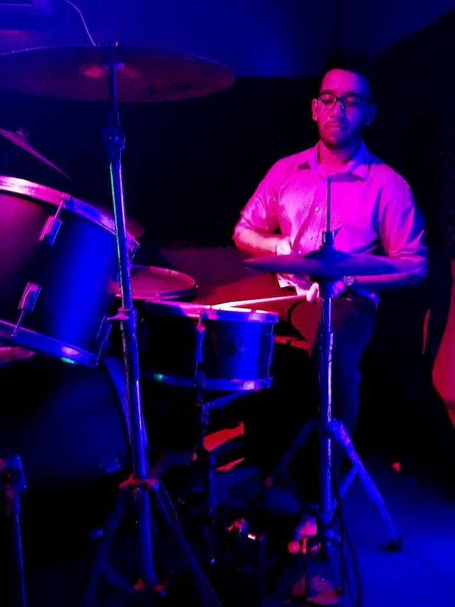

Khan Safat Islam Ananta
1301-340 Assiniboine Road, North York, ON, M3J 1L2
Contact no. 437-988-4005,
|
 |
| Shows the time | |
| Date | Degree | Institution | Notes |
|---|---|---|---|
| 2016 - Present | BSc, Computer Science | York Univeristy | North York, ON |
| 2015 - 2016 | BSc Computer Science and Engineering | North South University | Bangaldesh |